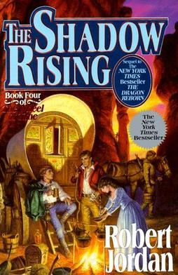
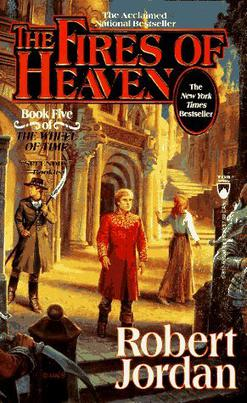
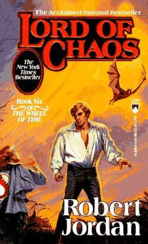

| Book Cover |
Book Name |
Publication date |
Description |

|
0. New Spring |
6 January 2004 |
New Spring describes events which take place twenty years before the events of The Eye of the World (Book 1). The story begins in the last days of the Aiel War, and the Battle of the Shining Walls around Tar Valon. It is set primarily in Tar Valon and the Borderlands, specifically Kandor.
New Spring focuses mainly on Moiraine Damodred and Siuan Sanche, two Aes Sedai new to the sisterhood, and how a young Moiraine became Aes Sedai, met Lan Mandragoran and made him her Warder.
The novel also explains how Moiraine and Siuan witnessed a prophecy of the Dragon's rebirth and came to begin investigating the Karaethon Cycle, the Prophecies of the Dragon, decades before discovering Rand al'Thor.
|

|
2. The Great Hunt |
November 15, 1990 |
The story features young heroes Rand al'Thor, Mat Cauthon, and Perrin Aybara, who join Shienaren soldiers in a quest to retrieve the Horn of Valere.
At the same time, Egwene al'Vere, Nynaeve al'Meara, and Elayne Trakand go to the White Tower in Tar Valon to learn Aes Sedai ways. Finally, an exotic army invades the western coast.
|

|
3. The Dragon Reborn |
October 15, 1991 |
Jordan continues his Wheel of Time saga (after The Eye of the World and The Great Hunt ). Three thousand years ago the Dragon led the male mages of the world into entrapping the Dark One, but the cost was high: all male mages, then and thereafter, were driven mad.
Now the Dark One is breaking free, and the only salvation may come through Rand al'Thor who may be a reincarnation of the Dragon and who must obtain the sword Callandor, held in the city of Tear.
All of Rand's companions from the previous books find themselves, willing or not, moving toward Tear for a confrontation with evil traps. Jordan's fast and absorbing adventure novel will keep the reader too entranced to worry about plot inconsistencies, numerous coincidences, lack of character development and Rand's inexplicably infrequent appearances.
As light fantasy, however, it proves an enjoyable diversion.
|
|

|
4. The Shadow Rising |
September 15, 1992 |
At the beginning of the book, Rand al'Thor has just claimed the crystal sword Callandor to prove himself the Dragon Reborn. He is approached by Lanfear; and the fortress 'Stone of Tear' is stormed by Trollocs and Fades, sent by another Forsaken (Sammael), while a third, Semirhage, sends her followers into the Stone, to oppose Sammael's forces.
In defense, Rand uses Callandor to create a lightning storm killing all the Trollocs and Fades. Rand then departs for the Aiel Waste, to which Egwene al'Vere and Moiraine Damodred accompany him.
Mat Cauthon, counseled by the Stone of Tear's Aelfinn ter'angreal, follows Rand. Perrin Aybara, after hearing of trouble in Two Rivers, his native region, returns thereto, accompanied by Faile Bashere.
Elayne Trakand, Nynaeve al'Meara, and Thom Merrilin depart to Tarabon to hunt the Black Ajah, while Min Farshaw arrives in Tar Valon to report to the Amyrlin Siuan Sanche. Thus, The Shadow Rising follows four groups of characters in four plotlines. |
|

|
5. The Fires of Heaven |
October 15, 1993 |
Chasing the Shaido Aiel, who are pillaging Cairhien, Rand al'Thor, titled Dragon Reborn and Car'a'carn, leads his Aiel to the Second Battle of Cairhien.
Mat Cauthon saves some troops from a Shaido ambush; wins numerous battles, relying on the memories of past generals, transferred telepathically to himself; and personally kills the Shaido leader, Couladin, whereupon the Shaido Aiel retreat.
Falsely believing that Queen Morgase Trakand of Andor died at the hands of the Forsaken, Rahvin, masquerading as Lord Gaebril, Rand prepares to invade Caemlyn with a small Aiel strike force.
Before he can do so, Lanfear attempts to kill him; but Moiraine Damodred grabs Lanfear and both topple through a ter'angreal, which is then destroyed, and both presumed dead. T
hereafter Rand attacks Caemlyn. Shortly after arrival, Rand's companions are killed by Rahvin, and Rand attempts to eradicate Rahvin in Tel'aran'rhiod. Nynaeve al'Meara and Elayne Trakand travel through lands filled with Seanchan, Dragonsworn, bandits, and Whitecloaks, attempting to find the base of the rebel Aes Sedai.
In Salidar, Nynaeve traps the Forsaken Moghedien in Tel'aran'rhiod with an a'dam. In Tel'aran'rhiod, Nynaeve distracts Rahvin, whereupon Rand destroys Rahvin with a tremendous burst of balefire, and thus revives Mat, Aviendha, and Asmodean.
|
|

|
6. Lord of Chaos |
October 15, 1994 |
The deposed Queen of Andor, Morgase Trakand, goes to Amadicia for aid in returning to the throne; but is taken captive by the Lord Captain Commander of the Children of the Light, Pedron Niall.
In response to amnesty on male channelers by Rand al'Thor, Mazrim Taim swears allegiance to him, and is assigned to train Asha'man at the Black Tower.
Rand is diplomatically courted by both the rebel Aes Sedai in Salidar, who send an envoy to Caemlyn, and the Aes Sedai of the White Tower, who send an envoy to Cairhien. In Emond's Field, Perrin Aybara goes to Caemlyn to join Rand.
Wrongly thinking the Salidar Aes Sedai few and cowed, Rand sends Mat Cauthon to retrieve Elayne Trakand and win the allegiance of the rebel Aes Sedai. Mat discovers that Egwene al'Vere has been named the Amyrlin Seat of the rebel Aes Sedai; and when she sends Nynaeve al'Meara and Elayne to Ebou Dar in Altara to search for a ter'angreal called the "Bowl of the Winds" to break the Dark One's control of the climate, Mat goes with them.
Shortly after Perrin joins him, Rand is secretly kidnapped by Elaida's Aes Sedai, who torture him en route to Tar Valon. Learning of the kidnapping, Perrin leads Rand's followers to the climactic Battle of Dumai's Wells.
At the end of the battle, the rebel Aes Sedai are forced to swear fealty to the Dragon Reborn while the surviving White Tower Aes Sedai remain captives.
|